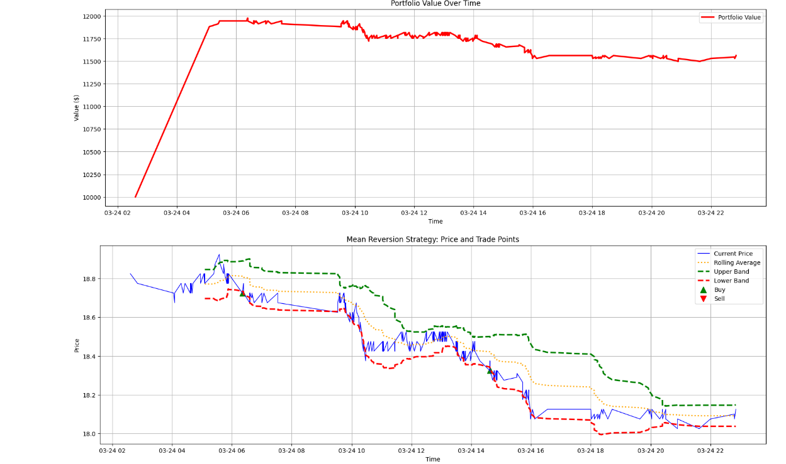
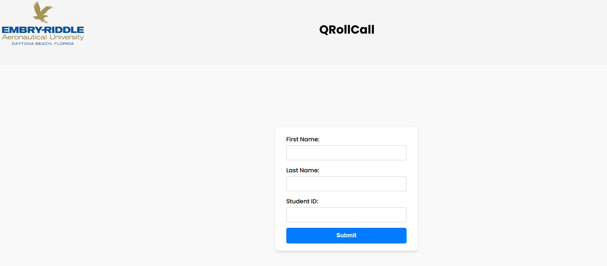
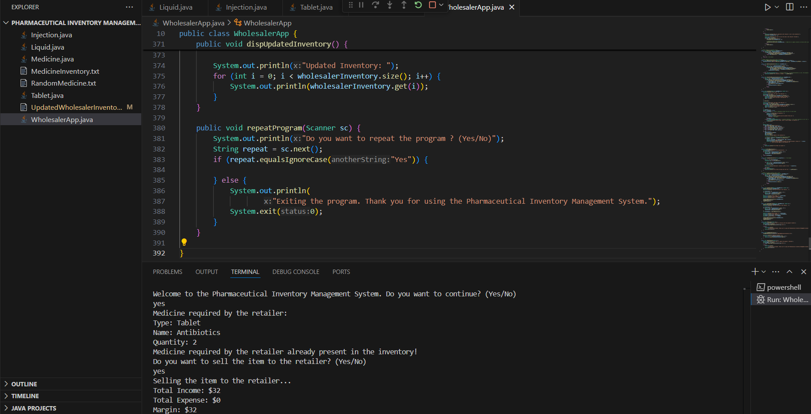

Selected software projects built using Java, Python, MERN, C#, and more
HFT Strategy Backtesting Engine
Built a custom Python engine to backtest HFT strategies using RSI, Bollinger Bands, SL/TP logic.
Loaded tick data from CSVs, calculated rolling statistics, and evaluated portfolio performance.
Implemented trade tracking, Sharpe ratio analysis, and parameter optimization with Matplotlib/Pandas.

ClassConnect – QR-Based Attendance Platform (In Progress)
Built a startup-focused full-stack attendance tracking system that allows professors to generate dynamic QR codes for real-time student check-ins, preventing proxy submissions using time-expiring tokens.
Designed the frontend with JavaScript, HTML, and CSS, and developed the backend using Firebase Cloud Functions and Firestore, enabling real-time session validation and robust database management.
Enabled attendance logging in under 30 seconds per session with 100% submission accuracy and a live professor dashboard; improved attendance visibility and reduced manual entry time by 90%.

Pharmaceutical Inventory System
Designed a robust inventory manager using Java OOP principles (encapsulation, inheritance, polymorphism).
Automated financial calculations and reduced input errors by 15% while increasing processing speed by 25%.
Enabled real-time inventory tracking for pharmaceutical stock, improving business workflow.

Code Analysis Tool (CAT)
Created a desktop application using C#, .NET, and WPF to analyze Java project codebases.
Extracted metrics like LOC, classes, inheritance, and conditionals to help visualize code complexity.
Reduced manual code review time by 25% and improved accuracy to 90% over 10+ Java files.